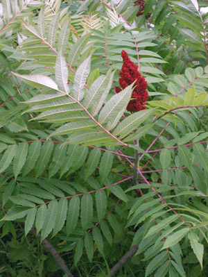

Previous || Next || Return to Mystery Plants || USC Herbarium
This Week's Mystery Plant | Dr. John B. Nelson Curator, USC Herbarium |
|
Just about everyone has seen this plant. It is a native shrub, or sometimes a small tree, occasional getting to be nearly 20' tall. You could probably see it in any of the lower 48 states, as it is one of the most widely distributed species in North America. It is in bloom now, putting on quite a show for us, and you can easily spot it in South Carolina just about anywhere in the piedmont and mountains. (Take a look along I-26 between Columbia and Asheville…there's lots of it.) The leaves are quite handsome, divided pinnately into toothy leaflets. The backside of each leaflet is chalky-white, and the upper surface is dark green. The leaf midrib is sometimes pink or reddish, and usually bears a thin layer of wax, which can be rubbed off in your fingers. The leaves turn brilliant red in the fall, which is one reason some gardeners like to grow this shrub for ornament. The flowers are small and yellowish, held together in a cluster, and these occur at the ends of branches. The flowers individually are not very impressive, but several hundred blooming together are showy and attractive. What's more, when in full bloom, the flowers offer plenty of pollen and nectar to insect visitors. Various sorts of bees, flies, wasps, and beetles regularly chow down on this floral smorgasbord. Following the blooms, bright red, fuzzy fruits are produced, each containing a single seed. The fruiting clusters, which stick straight up, are quite conspicuous. Plenty of wildlife species eat the fruits. In fact, while I was a student of Dr. Batson's a long time ago here at USC, he showed us how to make a passable lemonade by crushing up the red fruits together with ice, water, and sugar, then straining it all. It's pretty good. Just make sure you get the bugs off first. On the other hand, this species is related to poison ivy. But then so are cashews. |
 Photo by Linda Lee |